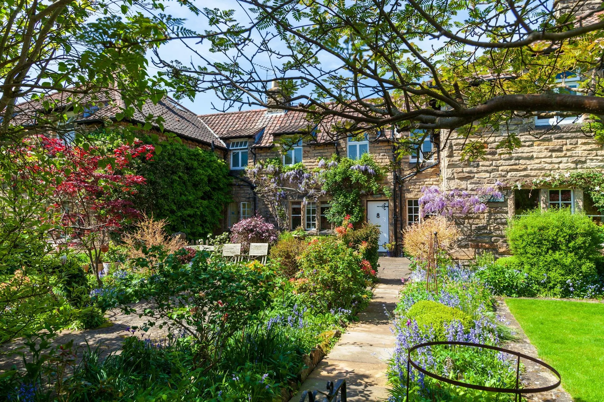
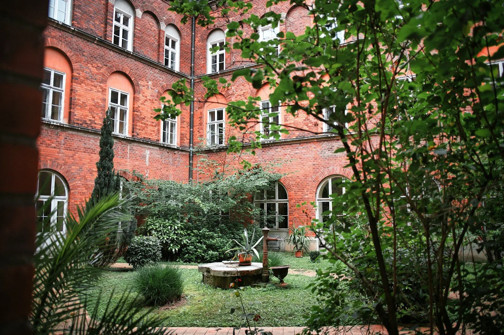
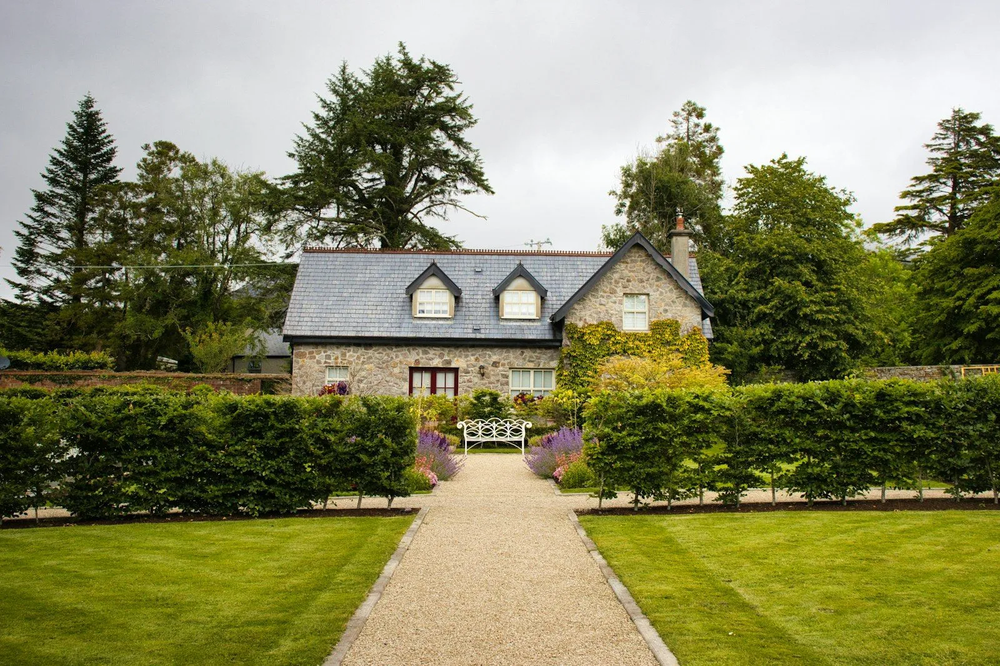
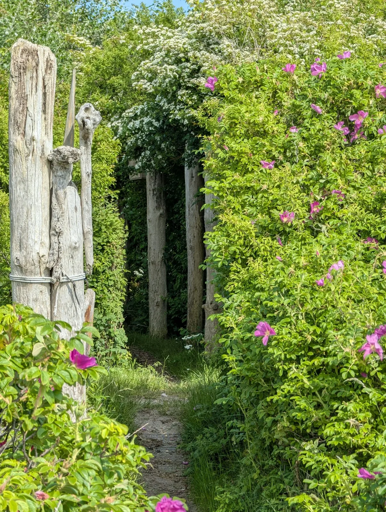

Willow Cottage
A gentle balance of cottage planting, useful paths and places to pause.
Every garden has its own starting point. Explore a few ways that good design can make the most of it.

A gentle balance of cottage planting, useful paths and places to pause.

A sheltered green retreat, designed around the character of old brick walls.

Simple structure and a generous central path give a country garden its rhythm.

A narrow passage becomes a soft, fragrant connection between garden rooms.
4 gardens shown
Tell us what you have in mind. We’ll work out the next step together.